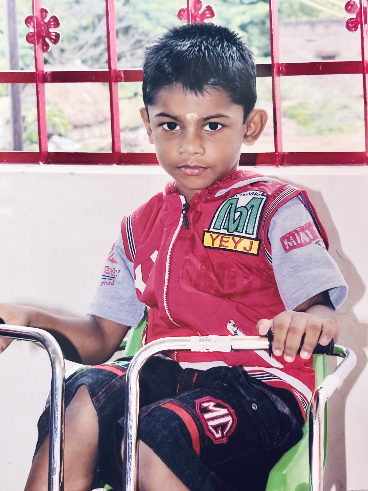
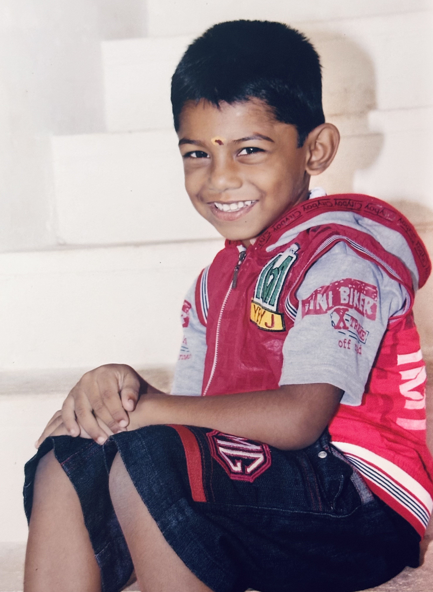

VIKASH SARAVANAN

B.Tech AI & Data Science Student
Data Analyst
Professional Certifications
About Me
I am an ambitious, results-driven Artificial Intelligence and Data Science undergraduate at Rathinam Technical Campus, Coimbatore (Class of 2029). I operate at the critical intersection of advanced machine learning, data analytics, and full-stack software architecture.
The Objective
To leverage raw data to engineer scalable, real-world solutions that address complex systemic challenges in healthcare, urban infrastructure, and education.
The Execution
My technical execution mirrors enterprise-level standards. I do not just study theory; I architect, build, and deploy comprehensive digital ecosystems spanning Python, SQL, advanced web frameworks, and robust network infrastructure.
The Trajectory
Intensely focused on securing high-impact, remote or Coimbatore-based internship opportunities in Data Analytics and AI Engineering. Ready to contribute to production environments and absorb elite engineering practices.
Personal Gallery
A glimpse into my journey, family, and childhood memories.


My Journey
The path from foundational learning to enterprise AI automation.
Enterprise AI Automation
Began intensive focus on building complex n8n workflows and autonomous agents for real-world scaling.
Certifications & Growth
Completed major certifications in Data Analysis with Python and Network Infrastructure troubleshooting.
Design Thinking Innovation
Certified in Design Thinking (IIT Bombay), applying core human-centric principles to AI solution architecture.
Data Science Mastery
Architecting live complex projects and actively seeking elite Data Science and AI Engineering internships.

Technical Skills
An intentionally diverse foundation, building end-to-end applications from the network layer to AI models.
Data Science & AI
- Languages & Querying: Python, SQL
- ML & Vision: Basic ML modeling, Computer Vision pipelines using YOLOv8, Automated Dataset Annotation (Roboflow, Ultralytics).
- Analytical Solving: Translating raw datasets into actionable architectural logic and mathematical frameworks.
Full-Stack Development
- Frontend Ecosystem: React, TypeScript, Vite, Tailwind CSS, shadcn/ui.
- Backend & Cloud: Supabase (PostgreSQL), advanced RLS implementation, offline-first asynchronous data queues.
- Deployment: Vercel, Netlify, Vitest.
Network & AI Tooling
- Infrastructure: Cisco Routers configuration, Network & Systems Troubleshooting.
- Infra Logic: Understanding physical/routing limitations informing offline-first architectures.
- AI-Assisted Dev: Advanced Cursor AI utilization, Gamma App, Perplexity AI, Notion AI.
Core Technology Proficiency
Featured Projects
Engineering complex software systems for real-world systemic problems.
HearWise Child Health
The Problem: Childhood hearing loss is an underdiagnosed crisis in resource-constrained schools, hindered by lack of specialists and capital-intensive hardware.
The Solution: A decentralized, mobile-first digital screening platform empowering non-specialists to conduct diagnostically valid preliminary screenings in under 10 minutes.
Technical Highlights & Clinical Validation
- Offline-First Resilience: Engineered with an asynchronous data queue using browser storage APIs. Securely commits data to Supabase upon network restoration with absolute zero data loss.
- Clinical Safety Protocols: Integrated mandatory hardware readiness gates adhering to WHO and AAA guidelines to minimize false positives.
- Audiometric Precision: Delivers a precise four-frequency sweep (500-4000 Hz) via standard consumer-grade headphones.
- Enterprise Admin Dashboard: Professional command center featuring React-Leaflet geographical mapping, filtering, and rigorous IP/Device audit logging.
- Bilingual Accessibility: Native support for English and Tamil.
Traffic Vision AI
The Problem: Static traffic timers lead to severe urban gridlock, wasted fuel, and critically delayed emergency response times.
The Solution: An Intelligent Traffic Management System acting as the "eyes and brain" of intersections, using dynamic, vision-based adaptive control algorithms.
Technical Highlights & System Modules
- Real-Time Object Detection: YOLOv8 models process live camera feeds to calculate precise vehicle density and track lane congestion.
- Dynamic Signal Optimization: Adaptive algorithms instantaneously adjust light durations, preemptively reallocating time from empty lanes to congested ones.
- Emergency Override Pipeline: Models trained to classify ambulances and fire engines trigger immediate signal overrides to clear routes without delay.
Support Ticket Triage Simulation (OpenEnv)
Context: Meta PyTorch OpenEnv Hackathon x Scaler School of Technology (Team: Fresh Tensors)
The Problem: Training Large Language Models (LLMs) and Reinforcement Learning agents directly on live customer support systems is highly risky and prone to failure. AI agents require safe, standardized, and stateful simulation environments to practice decision-making, routing, and triage before ever touching a production database.
The Solution: Architected a production-ready simulation environment adhering to the OpenEnv framework. This system acts as a backend training ground for AI agents, simulating a high-volume customer support ticketing system where agents must fetch state, determine ticket severity, and execute triage actions.
Key Engineering Highlights & Strategic Value
- Stateful API Architecture: Engineered a robust, asynchronous REST API using FastAPI. Exposes standard RL-interaction endpoints (/reset, /step, /state, /tasks, /grader) allowing AI agents to interact with the environment in isolated, repeatable episodes.
- Algorithmic Grading & Task Logic: Developed a multi-tiered evaluation engine featuring progressive difficulty levels (Easy, Medium, Hard). The grader mathematically evaluates the AI agent's actions and returns immediate performance feedback.
- DevOps & Containerization: Ensured the simulation was fully reproducible and deployable. Containerized the entire environment using Docker and orchestrated automated deployment pipelines using GitHub Actions, ensuring seamless integration with the global OpenEnv registry.
- Data Modeling: Utilized Pydantic for rigorous data validation, ensuring that the simulated state and the agent's action payloads remained strictly typed, preventing environment crashes during automated training runs.
- Strategic Value (AI Infrastructure): Demonstrates capability to build "AI Infrastructure." Engineered the rigorous backend systems and standardized environments required by data scientists to safely train, benchmark, and grade autonomous AI agents.
Professional Branding & The CoE Commitment
Strategic Objective: Strategically positioned to be visible to recruiters and high-level tech networks.
Key Initiatives
- The "Build in Public" Initiative: Launched @startupwithvikash to document the engineering journey. Showcasing the use of advanced tools like Cursor AI, Gamma, Roboflow, and Perplexity to prove capability to deploy code rapidly.
- Centre of Excellence (AI Skills Hub): Locked in institutional commitment to the AI Skills Hub, securing premium access to LinkedIn Learning and Coursera to pursue industry-recognized AI certifications. Prepared a strategic 5-tool presentation for the AI Immersion requirement.
- LinkedIn Integration: Actively curating presence at linkedin.com/in/vikash-saravanan-j7528, ensuring that the academic foundation in Artificial Intelligence and Data Science at Rathinam Technical Campus is backed by verifiable project links and GitHub repositories.
Freelancing & Strategic AI Sales
Strategic Expansion: Expanding beyond pure code to venture into tech-driven business development.
Key Initiatives
- AI SaaS Reseller Pitch: Developed a highly technical proposal to partner with AI software companies. Leveraging an AI/DS architecture background to position as a technical partner who can explain complex models, handle technical objections, and close deals with marketing agencies and tech firms.
Strategic Positioning
Engineering beyond code. Building technical networks and leveraging AI solutions.